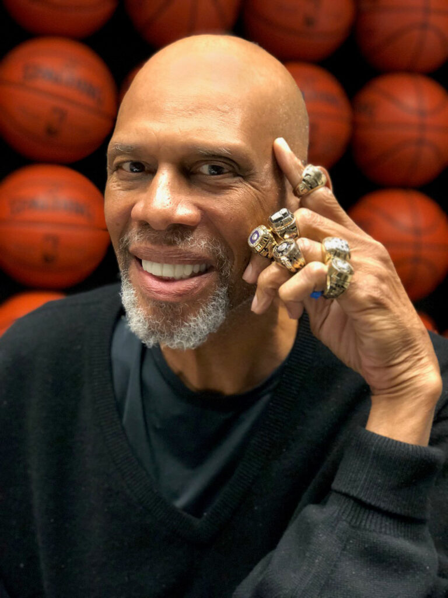

Infancia:
Kareem Abdul-Jabbar nació Ferdinand Lewis Alcindor Jr. el 16 de abril de 1947, en la ciudad de Nueva York, Jabbar medía 22″ pulgadas al nacer, e incluso de muy joven parecía seguir los pasos mucho más grandes de sus antepasados. Su abuelo, oriundo de Trinidad, medía 1,80 metros. Lewis padre, con 1,80 metros de altura, recibía el apodo de Big Al. Incluso la madre de Jabbar, de ascendencia cherokee, medía ella misma 1,70 metros.

Familia:
El pívot verdaderamente marcó diferencias en el baloncesto universitario. Debido a que las reglas NCAA de aquella época impedían a los freshmen jugar en partidos oficiales, sólo disputó tres años en UCLA antes de dar el salto a la NBA, firmando unos números de 26.4 puntos (64% en tiros de campo) y 15.5 rebotes. A esas cifras personales sumó un total de tres títulos nacionales, dos galardones de Jugador del Año y tres MVPs del Torneo NCAA. Además se trató del primer jugador en llevarse el Naismith College Players of the Year (1969), consiguiéndolo justo antes de pasar al baloncesto profesional. Con él como una de las piezas claves del equipo, los Bruins de UCLA atesoraron un record de 88 victorias y sólo 2 derrotas entre 1967 y 1969.

Su carrera en los Bucks:
Abdul-Jabbar dejó el baloncesto a la edad de 42 años como el máximo anotador, taponador, reboteador defensivo y el que más partidos y minutos disputó de la historia de la NBA, además de poseer el récord de más MVP de la Temporada (6) y ser el jugador que más All-Star Game ha disputado (19). También fue elegido diez veces en el mejor quinteto de la NBA y cinco en el segundo quinteto. Su lista de logros personales y colectivos es tal vez la más impresionante en la historia de la liga: Rookie del Año, campeón de la NBA en seis ocasiones, con los Bucks (una vez) y los Lakers (en las otras cinco), dos veces MVP de las Finales de la NBA y dos veces máximo anotador de la liga, entre otros muchos. A pesar de su increíble éxito en la pista, no fue hasta el ocaso de su carrera cuando Abdul-Jabbar se ganó por fin el afecto de los aficionados al baloncesto. Fue un hombre reservado que evitaba a la prensa y que a veces parecía distante. «Soy el peor entre los chicos malos», dijo una vez a la revista The Sporting News. Durante la temporada 1988-89, su última en activo, Abdul-Jabbar fue homenajeado en todas las canchas de la liga.